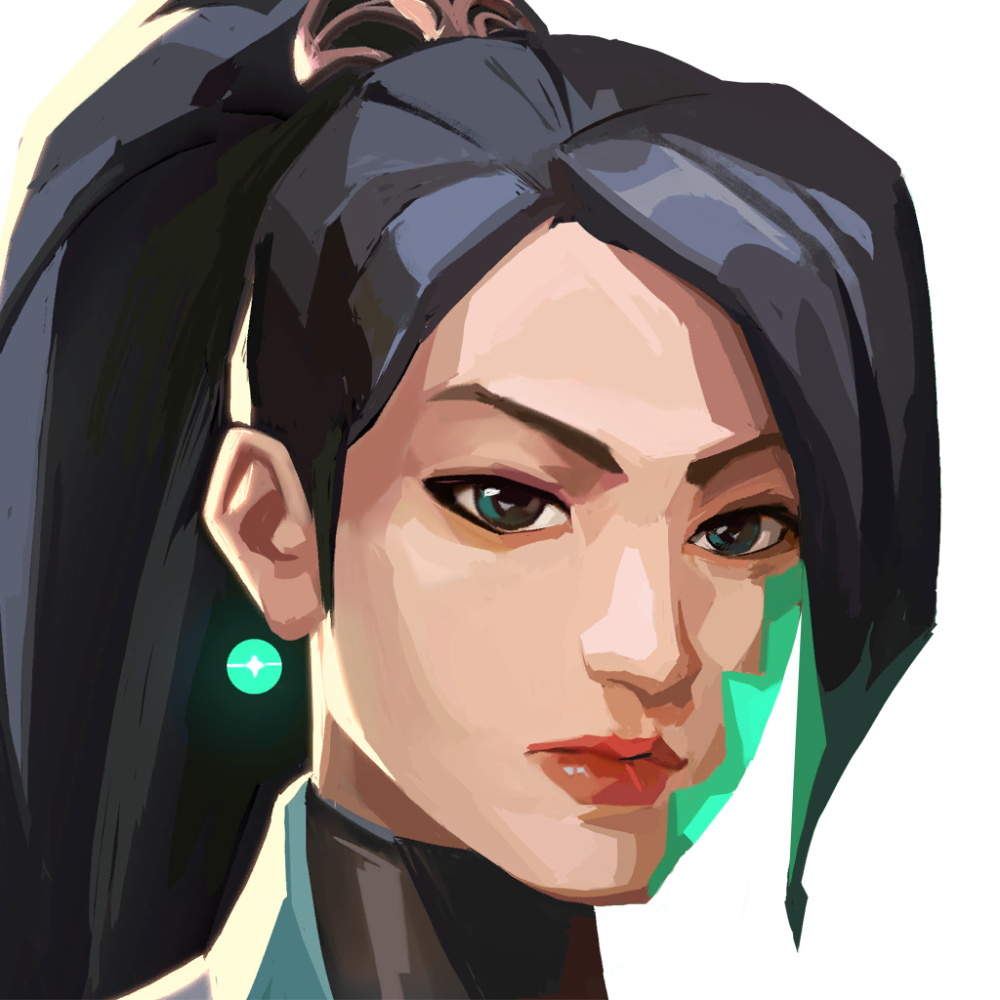
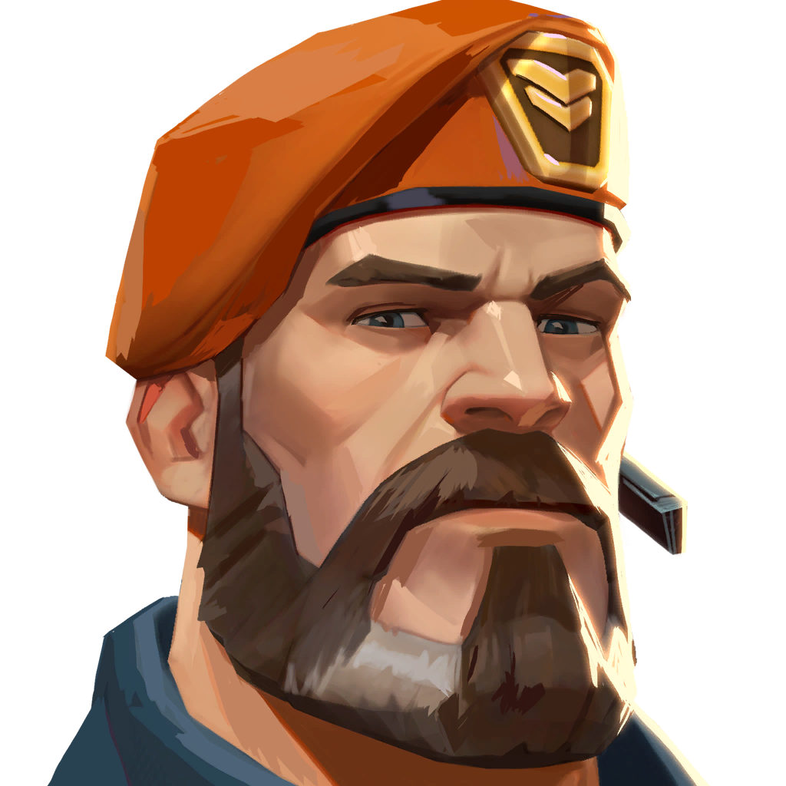

Агенты
Роль агента подсказывает, какую задачу он помогает решать. Дуэлянты начинают выход, зачинщики собирают информацию и готовят столкновение, специалисты управляют обзором, а стражи удерживают позиции и прикрывают команду.
Здесь выбраны четыре агента с разными задачами. Их портреты помогают связать имя и роль с узнаваемым персонажем.

|
Jett — ДуэлянтБыстро занимает пространство и создаёт первый контакт с противником. Рывок помогает уйти с линии огня, а дымовая завеса — ненадолго закрыть опасный угол. Её выход полезен, когда союзники готовы поддержать его. |

|
Sova — ЗачинщикРазведывает позиции перед выходом команды. Разведывательная стрела и дрон помогают проверить площадку, но найденную информацию нужно быстро использовать: противник может сменить позицию. |
|
 |
Sage — СтражПомогает удерживать занятую позицию и поддерживает союзников. Стена перекрывает проход, сфера замедления задерживает выход, а лечение позволяет раненому игроку продолжить бой. |
|
 |
Brimstone — СпециалистЗакрывает дымом простреливаемые направления и помогает команде безопаснее выйти на плент. Зажигательный снаряд может задержать противника в проходе или помешать обезвреживанию Spike. |
Один агент не обязан делать всё: состав команды и совместное применение способностей важнее набора отдельных эффектов.
Изображения персонажей: Riot Games. Все агенты на официальном сайте.